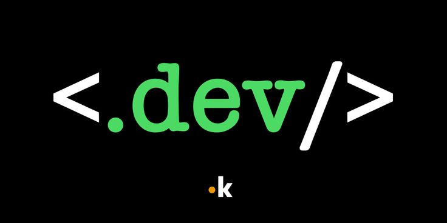

at first

I began my journey in web development when I decided to explore the world of technology. Through a free course in HTML and CSS, I gained the foundational skills needed to create my first web pages. Although facing errors and finding solutions was challenging, each small achievement motivated me to keep going. This process not only ignited my interest in development but also laid the groundwork for my professional growth in the field.
date of post: